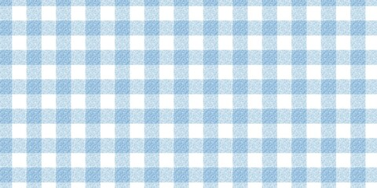

Prepare the following:
Cook 1 pound of pasta (usually either Spaghetti or angel hair) of choice in boiling water until Al Dente
Cook the garlic using the olive oil over medium-low heat until golden brown, roughly 10 mins
Add the pasta in to the pan as well as the aforementioned spices and garnishes
Toss the pasta using tongs or any other utensil for about 1-2 mins
Should you wish to, you may add extra cheese